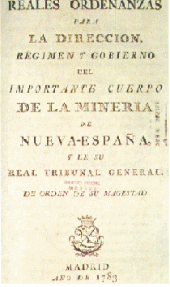

Reformas borbónicas en Nueva España
A partir de los años cuarenta del XVIII, comienzan a darse algunas de estas reformas en la Nueva España. La legislación así lo sugiere; por ejemplo, en cuanto a la Iglesia, la Corona redujo el poder del Arzobispado de México y limitó las funciones de los obispos (por pragmática real, 1748), prohibió la intervención del clero en la redacción de testamentos civiles (1754), ordenó la expulsión de los jesuitas (1767), dispuso que la doctrina se enseñase en español (1772), estableció leyes desamortizadoras para enajenar bienes raíces de hospitales y otras obras benéficas (cédula real, 1798).
En otro orden de cosas, se contrarrestó el poder del virrey y el de la Real Audiencia. Algo muy importante fue la modificación del aparato burocrático desplazándose a peninsulares residentes así como a criollos, para dar cargos a profesionales inmigrantes. De estos cambios ha quedado una vasta y reveladora legislación sobre las diferentes formas y normas establecidas por los Borbones.
El proyecto borbónico se impulsó en la metrópoli y sus dominios bajo el reinado de Carlos III; deseoso de conocer lo que tenía en la Nueva España, envió al conde José de Gálvez hacia 1765. A pocos años de su llegada, éste reorganizó la educación, el ejército y el sistema aduanal; creó el estanco del tabaco y nuevos impuestos, y estableció lo más importante de las reformas borbónicas: el sistema de intendencias, cuya ordenanza fue promulgada en 1786. Esta real ordenanza, de carácter general y de observancia obligatoria, reunió una serie de disposiciones, destinadas a regular u ordenar homogénea y sistemáticamente las instituciones novohispanas. Su aplicación fue decisiva para la organización integral, y vino a ser una especie de constitución en la época, aunque la ejecución de sus disposiciones tropezaría con problemas.
Gracias al sistema de intendencias, se implantó precisamente una nueva organización territorial y administrativa. Las intendencias abarcaron los factores político, económico y militar de sus jurisdicciones, y quedaron bajo la autoridad de los intendentes nombrados por el monarca, con funciones de justicia, hacienda, guerra y policía de provincia, quienes sustituyeron a los gobernadores provinciales. La división territorial tomó como base las provincias existentes para formar doce intendencias, cuyos nombres fueron los de las ciudades capitales: México (sede de la Intendencia General o Superintendencia), Puebla, Veracruz, Mérida, Oaxaca, Valladolid, Guanajuato, Zacatecas, Durango y Arizpe.
La capital de la Nueva España adquirió otra fisonomía al surgir edificios palaciegos, tránsito de carruajes, billares y cafés, así como una serie de obras públicas: instalación de alumbrado público, saneamiento de calles, reparación y ampliación del acueducto de Chapultepec, establecimiento de hospitales.
Durante los siglos XVII y XVIII, la sociedad se hizo más compleja por la mezcla racial. El proceso del mestizaje fue creciente e incluyó no sólo al elemento blanco unido al indígena, sino también a las múltiples castas cuyo origen se fue alejando cada vez más del tronco común.
Desde el momento en que España colonizó América hubo un interés de otras potencias por obtener posesiones. Los ingleses con sus colonias al norte al igual que Holanda, y los portugueses al sur con Brasil.
El mar Caribe se convirtió en un área de disputa, las potencias querían hacerse por lo menos de una isla para tener presencia. De esta manera Inglaterra, Francia, Holanda, Dinamarca y Suecia se beneficiaron de la piratería y del contrabando del comercio.
La defensa española no fue efectiva, pues las milicias que salvaguardaban las costas solo podían brindar protección en los puertos. Una vez que las embarcaciones zarpaban estaban expuestas a recibir un ataque de corsarios o de piratas, por lo que era necesaria la creación de una armada americana que nunca se realizó.
Para asegurar la defensa del territorio colonial, la reforma administrativa de Gálvez se complementó con cambios en la esfera militar. Así, se emprendió la construcción y la reparación de fortificaciones, y se puso en marcha la formación de un ejército compuesto por dos elementos de importancia desigual: el ejército regular y las milicias. El primero estaba formado por soldados permanentes y tropas de apoyo que procedían de España. Las milicias estaban integradas por los vecinos obligados a recibir instrucción militar para la defensa de su territorio, que a diferencia de quienes integraban el ejército regular, nunca recibían paga por ello. El mismo esfuerzo renovadores de su casa que se dio en la Marina.

Efectos socio económicos de las reformas borbónicas
Como es de suponerse, las reformas económicas trajeron consigo múltiples efectos y consecuencias, tanto positivas como negativas. El gobierno español tomó diversas medidas para explotar al máximo los recursos de la colonia, con el propósito de generar mucha más materia prima para la metrópolis. Con las reformas borbónicas se tocaron todas las áreas principales en la Nueva España. También estaban la pesca y el comercio en negro (pequeño). Obviamente hubo beneficios, se permitió ampliar los negocios entre ciertas colonias (Trinidad, Margarita, Cuba, Puerto Rico).
Las reformas borbónicas afectaron al Consulado de Comerciantes de la ciudad de México; esta corporación, que había acaparado el comercio exterior e interior del virreinato por medio del sistema de flotas y del control de los puertos, perdió su enorme monopolio con la expedición de las leyes sobre la libertad de comercio. Al mismo tiempo, la supresión de los alcaldes mayores, agentes comerciales del Consulado en los municipios del país y en las zonas indígenas, acabó con la red de comercialización interna y rompió el lazo político que permitía a los comerciantes de la capital controlar los productos indígenas de mayor demanda en el mercado exterior e interior.
La "libertad de comercio"
El comercio con América fue una de las áreas a la que los borbones le dedicaron mayor atención, ya que la consideraban como el principal motor de la recuperación de la economía española. Una de las primeras medidas fue el traslado de la Casa de Contratación de Sevilla a Cádiz (1717), lo cual legalizaba una situación de hecho, ya que desde fines del siglo anterior la bahía gaditana fue ocupando un lugar cada vez más preponderante en el comercio con América. La Casa de Contratación debía fomentar y regular la navegación entre España y América.
La minería
La minería, al igual que la tierra, era la espina dorsal de la economía de la Nueva España por lo que las reformas se adaptaron a esta situación. Juan Lucas de Lassaga junto a Joaquín Velázquez Cárdenas y León propuso unas reformas encaminadas a financiar las actividades mineras, reducir las cargas fiscales, solucionar los conflictos entre mineros (originados por la posesión de una mina o el desagüe de un conjunto de minas en la mayoría de los casos), precisar o reformar el contenido de las ordenanzas mineras vigentes y dotar al gremio de los mineros de un organismo directivo.
La Real Cédula de 1804
La medida que mayores desajustes provocó en la Nueva España fue la real cédula de 1804 sobre la enajenación de bienes raíces de las corporaciones eclesiásticas, que desató reacciones violentas en contra del gobierno español. Esto se debió a que, con excepción de los comerciantes más ricos, aquella disposición afectó a los principales sectores productivos del virreinato (agricultura, minería, manufacturas y pequeño comercio), y en particular a los agricultores, pues la mayoría de los ranchos y haciendas estaban gravados con hipotecas y censos eclesiásticos, que los propietarios se vieron obligados a cubrir en un plazo corto, a fin de que ese capital fuera enviado a España. De esta manera, no solo la Iglesia se vio afectada por la real cédula, sino también casi toda la clase propietaria y empresarial de la Nueva España, así como los trabajadores vinculados con sus actividades productivas. Por ello, se levantó un reclamo y por primera vez en la historia del virreinato todos los sectores afectados expusieron al monarca por escrito sus críticas contra el decreto en cuestión. A pesar de todo, la cédula se aplicó desde septiembre de 1805 hasta enero de 1809, produciendo un ingreso de alrededor de 12 millones de pesos para la Corona, que supusieron el 70 % de lo recaudado en todo el territorio hispanoamericano.
Intendencias
Las intendencias fueron destinadas a la recuperación económica española.
Con el sistema de intendencias se implanto una nueva organización territorial y administrativa en los Virreinatos.
Intendencias en la Nueva España:
Las intendencias se ocupaban de aspectos políticos, económicos, y militares de sus jurisdicciones, y los intendentes eran nombrados por el monarca.
Provincias y virreyes
Las intendencias fueron asignadas a un virrey, el primer virrey al que le fueron asignadas fue Antonio de Mendoza. Las que le fueron asignadas son: Reino de México, Capitania General de Yucatán, Capitania General de Guatemala, Reino de Nueva Galicia, Reino de Nueva Vizcaya, Nuevo Reino de Leon y Provincias de Coahuila o Nueva Extremadura.
1776
Apenas ocupo Galvez el ministerio de indias, se consagro a difundir por todas ellas el sistema de intendencias. La Real Ordenanza para el establecimiento e instrucción de Intendentes de Ejército y Provincia del Reino de la Nueva España.